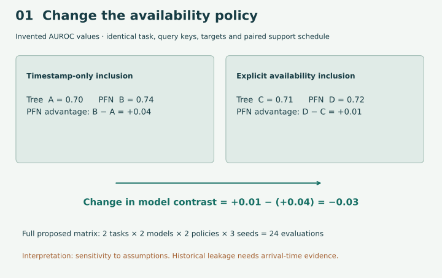
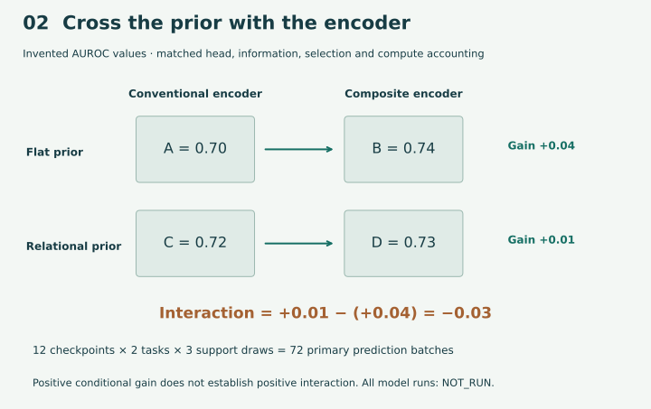
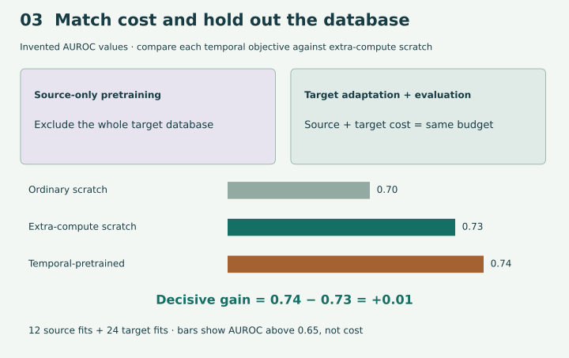

Year 5 · Research proposals · Lesson 198
Three directions worth trying to disprove¶
Your win: turn the landscape essay into three ranked research proposals that a skeptical collaborator could assess. Each proposal must say what changes, what stays fixed, what would count against it, and what must be resolved before running it. Work through the core in about 20 minutes, then spend a separate session drafting your cards and completing the lab.
The mission is to test whether learned relational models add value beyond strong tabular approaches. A useful negative result also advances that mission: it tells us where a more complicated model is unnecessary.
Lesson 189 collected candidate gaps. Lesson 197 separated a defensible claim from its evidence. The new step here is experimental commitment: turn each gap into a complete comparison and an explicit decision rule. Lesson 199 supplies the method for choosing a primary direction; the ranking here remains provisional.
NOT_RUN. Novelty: NOT_ESTABLISHED. Your defense: PENDING_WRITTEN_DEFENSE.Prerequisite recap. A query is an entity at a prediction time. Its label may describe an outcome during a later window. Availability asks whether an input was actually knowable then. A baseline is the comparison method under the same information and selection rules. Pretraining learns from source tasks before the target task. A prior is the distribution of tasks used to teach a foundation predictor. An encoder turns rows and relationships into representations used by that predictor.
AUROC measures how often a positive example ranks above a negative one, with half credit for ties. It ranges from 0 to 1; higher is better. Here 0.01 means one AUROC percentage point. The proposed margin is a planning choice, not a universal standard of practical importance.
1 · A topic is not yet a contribution¶
“Use graph structure” names an interest. A proposal needs five connected statements:
- Known result: what the nearest work already establishes.
- Candidate contribution: the specific unanswered comparison.
- Hypothesis: the change you predict in a defined population.
- Experiment: intervention, matched control, complete run matrix and scoring rule.
- Decision: a result that supports, weakens or leaves the hypothesis unresolved.
In plain terms. Give someone who disagrees with you a fair way to prove your idea unhelpful.
Worked narrowing. “Temporal pretraining helps” is already studied. The temporal-pretraining paper, §4.4, leaves unseen-database transfer and matched computational cost open. Narrow the proposal to those conditions. Relational Transformer already studies transfer across relational data, so “cross-database” alone is not the novelty argument.
Novelty is a comparison with the nearest work. Read methods and limitations, not just titles. Write down which axis differs: population, information policy, operator, objective, comparator or evaluation. If the closest work answers the same question under the same conditions, revise or retire the proposal.
Scope check. The six frozen primary texts are selected evidence, not an exhaustive review. Two additional abstract-level leads—Curriculum Matters and PluRel-to-RDB-PFN—make broad claims about “new synthetic relational pretraining” particularly unsafe. Their results are not reproduced here. Novelty remains
NOT_ESTABLISHEDfor all three proposals.
2 · Direction one: do availability assumptions change the comparison?¶
Question. On rel-f1/driver-dnf and rel-trial/study-outcome, does the RDB-PFN versus flattened-tree contrast change when timestamp filtering is replaced by an explicit availability policy?
A timestamp records an event time. An availability policy records when an input can be used. These may differ: an outcome whose window ends next month is not known merely because its row begins today. If true arrival times are unavailable, state the assumptions you vary. Do not call an assumption-driven difference proof of historical leakage.
Hold fixed: full query identities, targets, data release, model settings, validation-only selection, and the paired labeled-support schedule. Both models receive the same permissible labeled information within a policy. Only the eligibility policy changes. If that contract cannot be maintained, stop before running models.


Worked example — invented AUROC values. Under timestamp filtering, tree = 0.70 and PFN = 0.74: PFN advantage = 0.04. Under the availability policy, tree = 0.71 and PFN = 0.72: advantage = 0.01. The policy changes the advantage by 0.01 − 0.04 = −0.03. This is a difference of differences: one model contrast minus the corresponding contrast under another condition.
What would refute material sensitivity? A justified interval wholly inside (−0.01, +0.01). An interval wholly above +0.01 or below −0.01 supports a material change. Crossing or touching a boundary is inconclusive under our conservative teaching rule. The uncertainty procedure is still an execution-protocol requirement; the picture does not supply one.
Apply the rule at the boundary. Keep the illustrative sensitivity margin fixed at 0.01 and vary only an externally justified interval for the policy contrast:
| Interval | Decision | Reason |
|---|---|---|
| [−0.009, +0.009] | Below useful margin | Strictly inside the band |
| [−0.010, +0.009] | Inconclusive | Touches a boundary |
| [+0.011, +0.020] | Material sensitivity | Strictly above +0.010 |
These are hypothetical inputs to interval_decision, not uncertainty estimates for the proposed experiment. The function applies a declared rule; it cannot justify how the interval was estimated. Preserve sufficient numerical precision before checking the boundary: a rounded display is not the decision input.
Transfer the trace. Change only the last interval's lower endpoint to +0.010. The decision becomes inconclusive, despite the positive mean you might imagine inside it. This lesson deliberately uses strict boundaries; do not import the inclusive numerical-parity gates used elsewhere in the course.
RelArena already provides standardized relational comparisons. The candidate contribution is a measured sensitivity study with documented information assumptions, not benchmarking itself or fixing one cache key.
3 · Direction two: separate the prior from the encoder¶
Question. Does composite message passing add a useful benefit under a relational prior, and is that benefit larger than under a single-table prior?
RelGNN already introduces composite message passing. RDB-PFN already learns from synthetic relational tasks and uses DFS-derived features. Here DFS means deep feature synthesis: constructing flat features by aggregating related rows. Changing the synthetic generator changes the learning experience; changing the encoder changes the predictor. Changing both at once hides which change mattered.
A factorial design crosses two interventions. Train every combination of two priors and two encoders. Keep the prediction head, labeled supports, permissible path endpoints, selection budget and compute accounting matched. A conventional two-hop encoder must see the same reachable information. The proposed graph encoder and ICL head need training from compatible initialization; fitting an embedding width does not make a released checkpoint valid.


Worked example — invented AUROC values. The composite gain is 0.74 − 0.70 = 0.04 under the flat prior and 0.73 − 0.72 = 0.01 under the relational prior. The interaction is 0.01 − 0.04 = −0.03. Composite helps both, but this example does not support extra benefit from combining it with the relational prior.
Two questions therefore remain separate: is the relational-prior conditional gain usefully positive, and is the interaction positive? A positive interaction alone is insufficient if both encoders perform worse. Show all four absolute scores and both contrasts.
Complete accounting. Two priors × two encoders × three initialization seeds gives 12 checkpoints. Evaluate each on two tasks and three support draws: 72 primary prediction batches, corresponding to 24 checkpoint/task combinations. Add six released-checkpoint comparator batches and 18 tree fits/batches. A support draw chooses labeled examples for in-context prediction; it is not another independent database. These units count different operations and must be costed separately.
4 · Direction three: does pretraining beat spending the budget on the target?¶
Question. Do historical-relation or future-activity objectives improve a wholly held-out database beyond an equally expensive supervised baseline?
A historical-relation objective learns to recover eligible past links. A future-activity objective learns outcomes over a later window using only source examples whose label windows are complete. A database holdout excludes the entire target database from source training and source preprocessing. Excluding target labels alone is insufficient.


Worked example — invented AUROC values. Ordinary scratch training scores 0.70. Extra-compute scratch scores 0.73. A pretrained arm scores 0.74. Its apparent 0.04 gain over ordinary scratch becomes 0.01 over the decisive control. Source training, adaptation, preprocessing and selection all belong in the total budget. Equal update counts do not guarantee equal computational cost.
Complete accounting. Two held-out databases × two objectives × three seeds requires 12 source fits. Two target tasks × four arms × three seeds requires 24 target fits. The four arms are scratch, extra-compute scratch, historical-pretrained and future-pretrained. Report each objective/task separately; freeze any multiple-comparison policy before seeing outcomes.
An upper uncertainty bound below the proposed +0.01 useful-gain margin rules out that useful benefit in the declared setting. An interval crossing the margin remains inconclusive. A failed exclusion or cost audit invalidates the comparison before statistical interpretation. Two databases still form a narrow study.
5 · Decide what an interval actually says¶
An estimand is the quantity the experiment intends to estimate: here a paired gain or difference of differences. An interval describes uncertainty under a specified procedure and sampling unit. A sampling unit might be a driver or a database; choosing it incorrectly can make certainty misleading.
In plain terms. First decide what would matter. Then ask whether the evidence is precise enough to distinguish it from what would not matter.
The explorer classifies supplied intervals; it does not estimate them. For the future studies, specify paired resampling, dependency groups, confidence level and multiplicity before execution. Do not treat three seeds as three databases. L197's driver bootstrap belongs to its original regression comparison and cannot be borrowed as the uncertainty model for these new tasks.
6 · Rank the next useful decision, not a promised breakthrough¶
Impact means how much answering the question could change a research decision, including a negative answer. Feasibility concerns the next informative step, scored separately for data access, implementation and compute. These are authored judgments on a 1–5 scale, not measured probabilities.
The existing rubric is impact × weighted mean feasibility. With equal weights, temporal = 4 × (5+4+5)/3 = 18.67; composite = 5 × (4+3+2)/3 = 15; transfer = 5 × (3+2+1)/3 = 10.
All 27 weight triples from {1,2,3}³ retain temporal as the leader at the original scores. This does not establish robustness to every assumption: reducing temporal impact to 3 changes the equal-weight leader to composite. Ties must remain ties.
Why these scores? Temporal uses existing local audit paths, although arrival history remains uncertain. Composite needs a new trainable interface and twelve pretrained checkpoints. Transfer also needs a source corpus and auditable whole-database exclusions. The complete cards record the original rationale and preparation-effort estimates; these are estimates, not measured runtimes.
Priority does not establish affordability. Include preparation, training, selection, evaluation, retries and validation. Every full experiment currently has unknown phases, so all remain NOT_ESTABLISHED against the standing $10 cap. Unknown expense is not zero. L198 itself executes only the approved $0 proposal/evidence audit.
7 · Inspect the complete proposal cards¶
Each card preserves its original evidence, explains what the later lessons add, and lists exact execution gaps. A complete proposal can honestly contain unresolved implementation details. That makes it reviewable, not ready to dispatch.
1 · Temporal-policy sensitivity · proposed / unrun
Temporal-policy sensitivity¶
Question. Across rel-f1/driver-dnf and rel-trial/study-outcome, does replacing timestamp-only filtering with an explicit availability contract change paired model contrasts?
What is already known. Chronological evaluation and temporal-aware models already exist. L184 reports repeated-entity cache collisions in one source snapshot. L169 context curves do not measure pretraining scaling.
Candidate contribution. The new contribution would be a measured change in matched model contrasts under declared availability policies, not the discovery of temporal filtering or a cache repair.
What L197 adds and leaves open. L197 provides a complete saved evidence inventory; it contains no results for these two availability policies. L196 shows why a source diagnostic alone cannot estimate accuracy harm.
Refined hypothesis. On each declared task, the absolute policy-induced change in the RDB-PFN minus tree AUROC contrast exceeds 0.01.
Matched controls. Same cached data release, targets, splits, feature definitions and validation-only selection for RDB-PFN and a flattened tree baseline; two visibility policies. Reuse identical support rows and seeds across policies, with any ineligible support reported before running.
Estimand. For each task and seed, compute (AUROC_PFN − AUROC_tree)_strict − (AUROC_PFN − AUROC_tree)_timestamp. Report each task separately; seed spread is not database uncertainty.
Falsifier. A justified paired interval strictly inside (-0.01, 0.01) rules out the proposed material change for that task. Entirely beyond either margin supports sensitivity. All boundary-crossing or boundary-touching intervals remain inconclusive.
Complete accounting. 24 model/policy/task/seed evaluations, each on complete validation and test populations. RDB-PFN is checkpoint inference; tree arms require fitting. Seed pairs share a frozen support schedule; all models use the same eligible labeled information within each policy.
Cheapest next artifact. Availability ledger for all query and feature identities, distinguishing known, assumed and unknown observation times.
Declared matrix. Every combination is listed in the machine-readable report; each axis below is frozen as a proposal.
- model evaluations: task ∈ {rel-f1/driver-dnf, rel-trial/study-outcome} × model ∈ {RDB-PFN, flattened-tree} × policy ∈ {timestamp, availability} × seed ∈ {0, 1, 2} = 24.
Unresolved before execution:
- Exact source/data hashes and target reconstruction
- Full (entity_id, cutoff) train/validation/test manifests
- One validation-only selection rule and fixed search budget
- Per-task uncertainty resampling unit and coverage rationale
- Timed all-in cost bound including retries and validation
- Availability lineage for every feature and support label; historical arrival times may be unavailable
- Exact tree config, PFN checkpoint and shared label-budget/support policy
- Stop if paired eligible supports cannot be maintained; do not silently drop queries
Original priority rationale:
- Data 5: local full-key snapshots and audit receipts exist; actual historical arrival times remain unknown.
- Implementation 4: policy masks and keyed scoring are bounded; full DFS availability lineage still needs audit.
- Compute 5: first useful decision is a CPU key/availability audit, not new pretraining; complete model comparison cost is unverified.
Preparation effort: 8–16 human hours (authored planning estimate). All six full-run cost phases are unknown; budget NOT_ESTABLISHED.
Closest work: survey, relarena, temporal.
Original receipts (reports only): l184-report.json, l169-report.json, l177-report.json. These receipts are authenticated; their raw experiments are not all replayed. The full L197 packet is replayed separately.
State: PROPOSAL_NOT_EXECUTION_READY; models NOT_RUN; novelty NOT_ESTABLISHED; learner PENDING_WRITTEN_DEFENSE.
2 · Prior × encoder interaction · proposed / unrun
Prior × encoder interaction¶
Question. Does a composite encoder improve a schema-shared graph encoder plus ICL head beyond a conventional two-hop encoder when priors, labels, information and total compute are matched?
What is already known. RelGNN already contributes composite message passing. RDB-PFN uses synthetic relational priors and DFS before its predictor. L182 re-evaluates released predictors, not a trained composite hybrid.
Candidate contribution. Isolate the predictor-side composite operator and its interaction with a relational prior. RelGNN already supplies the operator, and RDB-PFN already supplies relational synthetic pretraining.
What L197 adds and leaves open. L197 replays a small released-system advantage on study-outcome; that is neither a trained hybrid nor evidence that changing the encoder causes the advantage.
Refined hypothesis. The composite encoder gives a useful (>0.01 AUROC) conditional gain under the relational prior, and its gain exceeds its gain under the single-table prior.
Matched controls. Four factorial arms share task counts, hidden width/parameter accounting, optimizer/selection budgets, schema-sharing rules, labeled supports and permissible neighbors. Conventional two-hop control sees the same path endpoints. Add a flattened strong baseline before interpreting practical value.
Estimand. Within each task/seed, (composite_relational − conventional_relational) − (composite_flat − conventional_flat). Also report composite_relational − conventional_relational. A positive interaction alone is insufficient if both architectures get worse.
Falsifier. For useful benefit, an upper interval endpoint below 0.01 rules out the proposed gain; a lower endpoint above 0.01 supports it. Separately test synergy against zero: an upper interaction endpoint ≤0 fails the positive-interaction claim. Uncertain or boundary-touching benefit intervals remain inconclusive.
Complete accounting. 12 new checkpoints; 24 checkpoint/task combinations × 3 support draws = 72 primary batches. Also 6 frozen-checkpoint comparator batches and 18 tree fits/batches. Each batch scores the complete declared validation and test populations. Counts name different units and must not be summed as identical training jobs.
Cheapest next artifact. Written tensor/interface contract and an explicitly proposed finite-gradient probe, followed by a complete training cost forecast. The probe itself is not run in L198.
Declared matrix. Every combination is listed in the machine-readable report; each axis below is frozen as a proposal.
- pretraining checkpoints: prior ∈ {single-table, relational} × encoder ∈ {conventional, composite} × seed ∈ {0, 1, 2} = 12.
- primary prediction batches: prior ∈ {single-table, relational} × encoder ∈ {conventional, composite} × seed ∈ {0, 1, 2} × task ∈ {rel-f1/driver-dnf, rel-trial/study-outcome} × support_draw ∈ {0, 1, 2} = 72.
- released prediction batches: model ∈ {released-DFS-RDB-PFN} × task ∈ {rel-f1/driver-dnf, rel-trial/study-outcome} × support_draw ∈ {0, 1, 2} = 6.
- tree fit prediction batches: model ∈ {flattened-tree} × task ∈ {rel-f1/driver-dnf, rel-trial/study-outcome} × seed ∈ {0, 1, 2} × support_draw ∈ {0, 1, 2} = 18.
Unresolved before execution:
- Exact source/data hashes and target reconstruction
- Full (entity_id, cutoff) train/validation/test manifests
- One validation-only selection rule and fixed search budget
- Per-task uncertainty resampling unit and coverage rationale
- Timed all-in cost bound including retries and validation
- Trainable graph/head interface, finite gradients and compatible initialization
- Exact generator/source exclusions, task curriculum, schedules and parameter/compute matching
- Meaningful same-shape control for single-table prior; do not change both graph access and encoder capacity
- Separate task/initialization uncertainty from repeated support draws
Original priority rationale:
- Data 4: public task releases and generators exist, but target-schema exclusion must be audited.
- Implementation 3: route mechanism is demonstrated; a trainable schema-shared encoder/head and adapters are new work.
- Compute 2: twelve new pretrained checkpoints plus controls have no verified total under $10.
Preparation effort: 24–48 human hours (authored planning estimate). All six full-run cost phases are unknown; budget NOT_ESTABLISHED.
Closest work: relgnn, rdbpfn, relarena.
Original receipts (reports only): l182-report.json, l177-report.json. These receipts are authenticated; their raw experiments are not all replayed. The full L197 packet is replayed separately.
State: PROPOSAL_NOT_EXECUTION_READY; models NOT_RUN; novelty NOT_ESTABLISHED; learner PENDING_WRITTEN_DEFENSE.
3 · Compute-matched transfer · proposed / unrun
Compute-matched transfer¶
Question. Do historical-relation and future-activity objectives improve performance on unseen databases beyond scratch and extra-compute supervised controls at the same all-in cost?
What is already known. Temporal pretraining with supervised controls is already studied within databases. RT already studies cross-database transfer. L183 saved supervised predictions cannot establish a pretraining gain.
Candidate contribution. Evaluate temporal objectives under whole-database exclusion and matched end-to-end cost. Cross-database transfer and temporal pretraining each already exist.
What L197 adds and leaves open. A supervised or published leaderboard advantage cannot isolate a pretraining benefit. Extra-compute scratch is the decisive comparator; source plus target cost belongs in the comparison.
Refined hypothesis. Each temporal objective improves the held-out task by more than 0.01 AUROC over extra-compute scratch at the same all-in budget.
Matched controls. Scratch, extra-compute supervised scratch, historical-objective pretraining and future-objective pretraining use the same target information and evaluation policy. Match total cost, not just update count. Report per-objective cost and adaptation cost separately.
Estimand. For each held-out database, AUROC_pretrained − AUROC_extra_compute_scratch at matched all-in cost. Report the two databases separately and treat them as a narrow feasibility study, not a general scaling law.
Falsifier. For each objective/task, an upper paired interval endpoint below 0.01 rules out the useful gain; a lower endpoint above 0.01 supports it. Otherwise inconclusive. Database contamination or unmatched costs invalidate interpretation before statistical scoring.
Complete accounting. 12 source pretraining fits plus 24 target fits. Each target fit evaluates its complete validation/test task. All source preprocessing excludes the entire target database; objectives cannot borrow target schema statistics.
Cheapest next artifact. Database exclusion manifest and separate source/target cost envelope. A same-database result cannot substitute.
Declared matrix. Every combination is listed in the machine-readable report; each axis below is frozen as a proposal.
- source pretraining fits: holdout ∈ {rel-f1, rel-trial} × objective ∈ {historical, future} × seed ∈ {0, 1, 2} = 12.
- target fits: task ∈ {rel-f1/driver-dnf, rel-trial/study-outcome} × arm ∈ {scratch, extra-compute-scratch, historical-pretrained, future-pretrained} × seed ∈ {0, 1, 2} = 24.
Unresolved before execution:
- Exact source/data hashes and target reconstruction
- Full (entity_id, cutoff) train/validation/test manifests
- One validation-only selection rule and fixed search budget
- Per-task uncertainty resampling unit and coverage rationale
- Timed all-in cost bound including retries and validation
- Explicit source database corpus, target holdouts and preprocessing exclusion audit
- Exact shared backbone, adapters, objectives and learning schedules
- Dollar and runtime matching policy, hardware prices and amortization convention
- Multiplicity policy for two objective claims on each task
Original priority rationale:
- Data 3: releases exist, but a decontaminated source/target corpus contract is unfinished.
- Implementation 2: source objectives, adapters and semantic sharing need a full integrated trainer.
- Compute 1: 12 source fits plus 24 target fits have no verified $10 bound; historical blocked runs caution against optimism.
Preparation effort: 40–80 human hours (authored planning estimate). All six full-run cost phases are unknown; budget NOT_ESTABLISHED.
Closest work: temporal, rt, survey.
Original receipts (reports only): l183-report.json, l177-report.json. These receipts are authenticated; their raw experiments are not all replayed. The full L197 packet is replayed separately.
State: PROPOSAL_NOT_EXECUTION_READY; models NOT_RUN; novelty NOT_ESTABLISHED; learner PENDING_WRITTEN_DEFENSE.
8 · What the complete reproduction establishes¶
| Reproduced evidence | Complete scope | Interpretation |
|---|---|---|
| Original research ranking | Three candidates, all 27 weight triples | Temporal leads 27/27 at original scores; changing impact can reverse this. |
| Published tables | 401 task cells + 90 summaries | Original 5 aggregate discrepancies and 34 rank differences retained. |
| L149 saved comparison | Five seeds per pipeline; all val/test keys | GNN advantage -0.174155 MAE; original conditional interval [-0.449621, 0.085850]. |
| L182 saved comparison | Three arms × ten draws × 702 queries | RDB-PFN minus TabICL +0.004369 AUROC; positive 6/10 draws. |
| L194 full task inventory | All 21 published reference rows | Zero fresh tasks; every fresh score remains null. |
| New proposal matrices | All three complete planned designs | Counts are planning artifacts; no new model run occurred. |
Complete report · Independent verification · Source review.
The audit starts from original frozen inputs, not summary scores. It re-parses every selected published table cell, recomputes comparison pools and ranks, re-scores every saved prediction using complete query keys, and preserves original intervals. Independent checks use different arithmetic and joins. All prior discrepancies and missing fresh scores survive.
Scope check. This is full reproduction of the declared proposal/evidence audit. It is not fresh model training, independent replication, whole-paper reproduction, or proof of novelty. The RDBLearn result remains
INCOMPLETE_SOURCE_PREPROCESSING_GATE. Earlier incomplete learner exits remain incomplete.
Lab · make the proposal executable as a decision¶
Student notebook · Executed walkthrough · Solution · Portable reproducer · Printable reference · Exact protocol.
Implement three live functions: paired contrasts, interval decisions and complete matrix expansion. Your functions feed the proposal audit; incomplete matrices and unsupported conclusions fail checks. All load-bearing replay code is visible. The portable packet contains the full original evidence and independent verifiers.
Your writing task. Draft three 250–400 word proposals using the blank template. For each, cite the closest work; distinguish the candidate contribution; state a falsifiable hypothesis, matched controls, full run count, uncertainty plan, unresolved fields and next decision. Rank them with one justified change to the authored assumptions. Name an observation that would reverse your ranking. Do not select the final direction yet.
Exit evidence: your three cards, a reproduced audit report, your revised ranking and a written defense. Automated checks verify arithmetic and structure, not scientific originality or understanding. Your status stays PENDING_WRITTEN_DEFENSE until your work is reviewed.
Primary reading: Temporal Heterogeneous Graph Pretraining, §4.4. Explain exactly how its stated limitation differs from the transfer experiment above. Then read the closest source for your preferred candidate before defending it.
Ask the agent follow-up questions. Bring one proposal or an unclear control for critique. Tomorrow, reconstruct the three contrasts without notes. In a week, find the strongest primary-source objection and revise one card. Practitioner feedback can help test the novelty argument later; this lesson sends no external messages.